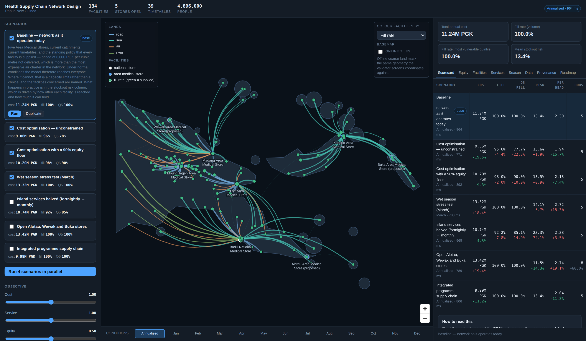

Models sea, air and seasonal road access as first-class realities, scores every scenario on cost and equity, and stays with the government after the consultant leaves.
Runs in your browser. Nothing to install, nothing to sign into.

Four things this tool does that a spreadsheet and a generic network optimiser cannot. Every figure below is real solver output you can reproduce in the demo.
Every clinic, store and lane on one map — road, sea, air and river — with each facility coloured by how well it is actually supplied.
11.24M PGK/yr · everyone reachedAsk for the cheapest network and the tool names the people it stopped reaching, rather than reporting a percentage and moving on.
−19.5% cost · 217,480 people cut offClick a month on the strip at the bottom. The monsoon closes highland roads and the southeast trades cut sea capacity, and the whole plan re-prices.
+35.8% cost · 19 facilities unreachableOpen the Data tab and export the network. The file that comes out is the same shape as the file that goes in, so the work survives this tool.
4 sheets · 70 columns · round tripWhat is real here, and what is not. The facility locations, the provinces, the transport modes and the shape of the network are real. Demand, storage capacity, costs and the vessel and aircraft timetables are illustrative — they stand in for the ministry's own figures until those are loaded. The tool says so on its own front page, and every distance carries the method that produced it and a confidence score.
This page is a demo. The real tool runs a solver on a server. Here, every scenario has been solved ahead of time for all twelve months and the results shipped alongside the interface, which is otherwise the exact build you would run yourself. So the map, the scorecard, the equity panel, the month-by-month re-solve and the exports are genuine. Anything that would change the model — uploading a workbook, connecting to DHIS2 or mSupply, moving a lever nobody pre-solved — will politely tell you it needs the real thing.
Two commands, and it needs neither Node nor a recent Python. The interface is committed already built, because requiring a toolchain to see a map in a provincial health office would contradict the point.